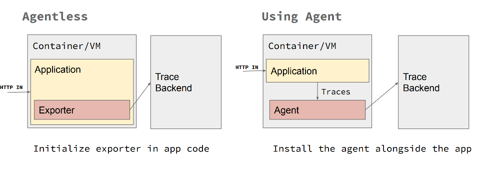

Open Telemetry
Construir sistemas observáveis permite medir o quão bem ou mal a aplicação está se comportando e POR QUE ela está se comportando de determinada maneira. A adoção de padrões de código aberto relacionados à implementação de recursos de telemetria e rastreamento, construídos com base no framework OpenTelemetry, ajuda a desacoplar as implementações específicas do fornecedor, mantendo uma solução de código aberto extensível, padrão e portátil.
O OpenTelemetry é um padrão de observabilidade de código aberto que define como gerar, coletar e descrever telemetria em sistemas distribuídos. O OpenTelemetry também fornece uma distribuição única de um conjunto de APIs, SDKs e bibliotecas de instrumentação que implementam o padrão de código aberto, que pode coletar, processar e orquestrar dados de telemetria (sinais) como rastreamentos, métricas e logs. Ele oferece suporte a várias linguagens populares (Java, .NET, Python, JavaScript, Golang, Erlang, etc.). O OpenTelemetry segue uma abordagem independente de fornecedor e baseada em padrões para coletar e gerenciar dados de telemetria. Um ponto importante a ser observado é que o OpenTelemetry não possui sua própria infraestrutura; toda a telemetria coletada pelo OpenTelemetry Collector deve ser enviada para uma infraestrutura de backend como o Prometheus, Jaeger, Zipkin, Azure Monitor, etc. O OpenTelemetry é também o segundo projeto mais ativo da CNCF, atrás apenas do Kubernetes.
Os principais problemas que o OpenTelemetry resolve são: primeiro, neutralidade de fornecedor para APIs de rastreamento, monitoramento e registro e, segundo, implementação de propagação de contexto multiplataforma pronta para uso para rastreamento distribuído de ponta a ponta em componentes heterogêneos.
Conceitos Principais do OpenTelemetry
Padrões de Implementação do OpenTelemetry

Uma explicação detalhada dos conceitos do OpenTelemetry está fora do escopo deste repositório. Há muitas informações disponíveis sobre como configurar a instrumentação automática do SDK e como funcionam os Exportadores, Tracers, Contexto e Hierarquia de Spans. Consulte a seção de Referências para recursos valiosos do OpenTelemetry.
No entanto, entender os padrões principais de implementação ajudará você a saber qual abordagem se adapta melhor ao cenário que está tentando resolver. Existem três padrões principais, a saber:
- Telemetria automática: O suporte para instrumentação automática está disponível para algumas linguagens. A instrumentação automática do OpenTelemetry (100% sem código) é geralmente feita por meio de ganchos de biblioteca ou patching de código de biblioteca. A instrumentação automática interceptará todas as interações e dependências e enviará automaticamente a telemetria para os Exportadores configurados. Mais informações sobre esse conceito podem ser encontradas na documentação de instrumentação do OpenTelemetry.
- Rastreamento manual: Isso deve ser feito codificando usando o SDK do OpenTelemetry, gerenciando objetos
tracerpara obter Spans e formando Escopos do OpenTelemetry instrumentados para identificar os segmentos de código a serem rastreados manualmente. Além disso, usando as anotações @WithSpan (decorações de método em C# e Java) para marcar métodos inteiros que serão rastreados automaticamente. - Abordagem híbrida: A maioria dos cenários prontos para produção exigirá uma combinação de ambas as técnicas, usando a instrumentação automática para coletar telemetria automática e o SDK do OpenTelemetry para identificar segmentos de código que são importantes para instrumentar manualmente. Ao considerar cenários prontos para produção, a abordagem híbrida é o caminho a seguir, pois permite cobrir completamente toda a solução. Ele fornece propagação automática de contexto e correlação de eventos prontas para uso.
Coletor

O coletor é um processo separado projetado para ser um "destino" para dados de telemetria emitidos por muitos processos, que podem então exportar esses dados para sistemas de backend. O coletor possui duas estratégias de implantação diferentes: rodar como um agente ao lado de um serviço ou como um gateway, que é uma aplicação remota. Em geral, é recomendável usar ambos: o agente seria implantado com seu serviço e rodaria como um processo separado ou em um sidecar; enquanto isso, o coletor seria implantado separadamente, como sua própria aplicação em um contêiner ou máquina virtual. Cada agente encaminharia os dados de telemetria para o coletor, que poderia então exportá-los para uma variedade de sistemas de backend, como Lightstep, Jaeger ou Prometheus. O agente também pode ser substituído pela instrumentação automática, se suportada. A instrumentação automática fornece as capacidades de coleta, processamento e exportação de telemetria do coletor.
Independentemente de como você escolher instrumentar ou implantar o OpenTelemetry, os Exportadores fornecem opções poderosas para relatar dados de telemetria. Você pode exportar diretamente de seu serviço, pode passar pelo coletor ou pode agregar em coletores autônomos - ou mesmo uma combinação desses métodos.
Bibliotecas de Instrumentação
Uma biblioteca que permite a observabilidade para outra biblioteca é chamada de biblioteca de instrumentação. As bibliotecas do OpenTelemetry são específicas para cada linguagem, e atualmente há um bom suporte para Java, Python, JavaScript, .NET e Golang. O suporte para instrumentação automática está disponível para algumas bibliotecas, o que torna o uso do OpenTelemetry fácil e trivial. Caso a instrumentação automática não esteja disponível, a instrumentação manual pode ser configurada usando o SDK do OpenTelemetry.
Integração do OpenTelemetry
O OpenTelemetry pode ser
usado para coletar, processar e exportar dados para múltiplos sistemas de backend. Algumas integrações populares suportadas pelo OpenTelemetry são:
- Zipkin
- Prometheus
- Jaeger
- New Relic
- Azure Monitor
- AWS X-Ray
- Datadog
- Kafka
- Lightstep
- Splunk
- Monitor GCP
Por que usar o OpenTelemetry
A principal razão para usar o OpenTelemetry é que ele oferece um padrão de código aberto para implementar telemetria distribuída (propagação de contexto) em sistemas heterogêneos. Não é necessário reinventar a roda para implementar o monitoramento de transações de fluxo de negócios de ponta a ponta ao usar o OpenTelemetry.

Ele permite a telemetria de rastreamento, métricas e registros por meio de um conjunto de bibliotecas e ferramentas multilínguas de distribuição única que permitem uma arquitetura de telemetria plug-and-play que inclui o conceito de agentes e coletores.
Além disso, evitando qualquer bloqueio proprietário e alcançando neutralidade de fornecedor para APIs e backends de rastreamento, monitoramento e registro permite a máxima portabilidade e padrões de extensibilidade.
Outro bom motivo para usar o OpenTelemetry é se a pilha usa OpenCensus ou OpenTracing. Como o OpenCensus e o OpenTracing abriram caminho para o OpenTelemetry, faz sentido introduzir o OpenTelemetry onde o OpenCensus ou o OpenTracing são usados, pois ainda é compatível com versões anteriores.
Além de adicionar atributos personalizados, amostragem e coleta de dados para métricas e rastreamentos, o OpenTelemetry é governado por especificações e apoiado por grandes players no cenário de Observabilidade, como Microsoft, Splunk, AppDynamics, etc. É provável que o OpenTelemetry se torne um padrão de código aberto de fato para habilitar métricas e rastreamentos quando todos os recursos se tornarem GA.
Status Atual do Projeto OpenTelemetry
O OpenTelemetry é um projeto que surgiu da fusão do OpenCensus e do OpenTracing em 2019. Embora o OpenCensus e o OpenTracing estejam congelados e não estejam mais recebendo novos recursos, o OpenTelemetry possui compatibilidade retroativa com o OpenCensus e o OpenTracing. Alguns recursos do OpenTelemetry ainda estão em beta, o suporte a recursos em diferentes linguagens está sendo rastreado aqui: Status do Recurso do OpenTelemetry. O status do projeto OpenTelemetry pode ser acompanhado aqui.
Do site:
Nosso objetivo é fornecer um lançamento de qualidade de produção para a fonte de dados de rastreamento em grande parte dos componentes do OpenTelemetry no primeiro semestre de 2021. Vários componentes já alcançaram esse marco! Esperamos que as métricas atinjam o mesmo status no segundo semestre de 2021 e estamos mirando nos logs em 2022.
O que observar
Como o OpenTelemetry é um projeto muito recente (a primeira versão GA de alguns recursos foi lançada em 2020), muitos recursos ainda estão em beta, portanto, é necessário fazer uma diligência adequada antes de usar tais recursos em produção. Além disso, o OpenTelemetry oferece suporte a muitas linguagens populares, mas os recursos em todas as linguagens não estão em pé de igualdade. Algumas linguagens oferecem mais recursos em comparação com outras. Também é importante observar que, como alguns recursos não estão em GA, pode haver problemas de incompatibilidade com as ferramentas. Dito isso, o OpenTelemetry é um dos projetos mais ativos da CNCF, então é esperado que muitos mais recursos alcancem o status GA em breve.
ATUALIZAÇÃO de janeiro de 2022
Além da especificação e implementação de registro que ainda estão marcadas como rascunho ou beta, todas as outras especificações e implementações relacionadas a rastreamento e métricas são consideradas estáveis ou em estado de congelamento de recursos. Muitas bibliotecas ainda estão em desenvolvimento ativo, portanto, uma análise minuciosa deve ser feita dependendo da linguagem com base em recursos.
Opções de Integração com o Azure Monitor
Usando a Biblioteca Azure Monitor OpenTelemetry Exporter
Nesse cenário
, você utiliza o SDK OpenTelemetry como a biblioteca de instrumentação principal. Basicamente, isso significa que você instrumentará sua aplicação usando as bibliotecas OpenTelemetry e, em seguida, usará o Exportador Azure Monitor OpenTelemetry como um exportador adicional com o SDK OpenTelemetry. Dessa forma, os rastreamentos criados por sua aplicação usando o OpenTelemetry serão enviados para sua instância do Azure Monitor.
Usando o Arquivo JAR do Agente Application Insights - Apenas para Java
A instrumentação do OpenTelemetry em Java oferece outra maneira de integrar com o Azure Monitor, usando o jar do Agente Application Insights Java.
Ao configurar essa opção, o arquivo do Agente Application Insights é adicionado durante a execução da aplicação. O arquivo de configuração applicationinsights.json também deve ser incluído como parte dos artefatos da aplicação. Preste atenção à seção de visualização, onde a propriedade "openTelemetryApiSupport": true está definida como true, permitindo que o agente intercepte a telemetria do OpenTelemetry criada no código da aplicação e a envie para o Azure Monitor.
A instrumentação do Agente Java do Application Insights suporta muitas bibliotecas e frameworks e servidores de aplicação. O Agente Java do Application Insights melhora esta lista. Portanto, a principal diferença entre executar o Agente Java do OpenTelemetry e o Agente Java do Application Insights é demonstrada na quantidade de rastreamentos registrados no Azure Monitor. Ao executar com o agente Java do Application Insights, há mais telemetria sendo enviada para o Azure Monitor. Por outro lado, ao executar a solução usando o modo de agente do Application Insights, é essencial destacar que nada é registrado no Jaeger (ou em qualquer outro exportador do OpenTelemetry). Todos os rastreamentos são enviados exclusivamente para o Azure Monitor. No entanto, tanto a instrumentação manual feita por meio do SDK OpenTelemetry quanto todos os rastreamentos automáticos, dependências, contadores de desempenho e métricas instrumentadas pelo agente Application Insights são enviados para o Azure Monitor. Embora haja uma grande quantidade de dados adicionais automaticamente instrumentados pelo agente Application Insights, pode-se deduzir que ele não é necessariamente compatível com o OpenTelemetry. Somente os rastreamentos registrados pela instrumentação manual usando o SDK OpenTelemetry o são.
Comparação entre OpenTelemetry e Agentes do Application Insights
| Destaque | Agente OpenTelemetry | Agente Application Insights |
|---|---|---|
| Telemetria Automática | Sim | Sim |
| Rastreamento Manual | Sim | Sim |
| Exportadores Plug-and-Play | Sim | Não |
| Múltiplos Exportadores | Sim | Não |
| Layout Completo do OpenTelemetry (desacoplamento de agentes, coletores e exportadores) | Sim | Não |
| Telemetria Enriquecida pronta para uso | Não | Sim |
| Backend de Telemetria Unificado | Não | Sim |
Resumo
Como você pode imaginar, não existe uma abordagem única ao implementar o OpenTelemetry com o Azure Monitor como um backend. No momento em que este texto foi escrito, se você deseja ter a flexibilidade de usar diferentes backends do OpenTelemetry, deve definitivamente optar pelo Agente OpenTelemetry, mesmo que sacrifique todos os rastreamentos automáticos que fluem para o Azure Monitor. Por outro lado, se você deseja obter o melhor do Azure Monitor e ainda deseja instrumentar seu código com o SDK OpenTelemetry, deve usar o Agente Application Insights e instrumentar manualmente seu código com o SDK OpenTelemetry para obter o melhor dos dois mundos. De qualquer forma, instrumentar seu código com o OpenTelemetry parece ser a abordagem correta, pois o ecossistema só tende a crescer, melhorar e se tornar mais robusto.
Tópicos Avançados
Utilize a biblioteca de plugin de rastreamento Azure OpenTelemetry para Java para habilitar o rastreamento distribuído entre componentes Azure por meio do OpenTelemetry.
Propagação manual de contexto de rastreamento
O contexto de rastreamento é armazenado no armazenamento local da thread. Quando o fluxo de aplicação envolve várias threads (por exemplo, uma fila de trabalho multithread ou processamento assíncrono), os rastreamentos não serão combinados em uma única cadeia de rastreamento de ponta a ponta com propagação de contexto automática. Para alcançar isso, você precisa propagar manualmente o contexto de rastreamento (exemplo em Java) armazenando os cabeçalhos de rastreamento junto com o item da fila de trabalho.
Teste de Telemetria
Os dados críticos de telemetria devem ser cobertos por testes. Você pode cobrir a telemetria por meio de testes simulando o servidor coletor de telemetria. Em um ambiente de teste automatizado, a instrumentação de telemetria pode ser configurada para usar o exportador OTLP e apontar o ponto de extremidade do exportador OTLP para o servidor coletor. O uso de bibliotecas de servidores simulados (por exemplo, MockServer ou WireMock) pode ajudar a verificar os dados de telemetria enviados para o coletor.